Exploratory analysis of Cnr1 in mouse Onecut3-GABAergic and dopaminergic hypothalamic neurons during development
Evgenii Tretiakov
2026-02-04
Last updated: 2026-02-04
Checks: 6 1
Knit directory: PeVN-dopaminergic-Cnr1/
This reproducible R Markdown analysis was created with workflowr (version 1.7.2). The Checks tab describes the reproducibility checks that were applied when the results were created. The Past versions tab lists the development history.
The R Markdown file has unstaged changes. To know which version of
the R Markdown file created these results, you’ll want to first commit
it to the Git repo. If you’re still working on the analysis, you can
ignore this warning. When you’re finished, you can run
wflow_publish to commit the R Markdown file and build the
HTML.
Great job! The global environment was empty. Objects defined in the global environment can affect the analysis in your R Markdown file in unknown ways. For reproduciblity it’s best to always run the code in an empty environment.
The command set.seed(20230529) was run prior to running
the code in the R Markdown file. Setting a seed ensures that any results
that rely on randomness, e.g. subsampling or permutations, are
reproducible.
Great job! Recording the operating system, R version, and package versions is critical for reproducibility.
Nice! There were no cached chunks for this analysis, so you can be confident that you successfully produced the results during this run.
Great job! Using relative paths to the files within your workflowr project makes it easier to run your code on other machines.
Great! You are using Git for version control. Tracking code development and connecting the code version to the results is critical for reproducibility.
The results in this page were generated with repository version d07340d. See the Past versions tab to see a history of the changes made to the R Markdown and HTML files.
Note that you need to be careful to ensure that all relevant files for
the analysis have been committed to Git prior to generating the results
(you can use wflow_publish or
wflow_git_commit). workflowr only checks the R Markdown
file, but you know if there are other scripts or data files that it
depends on. Below is the status of the Git repository when the results
were generated:
Ignored files:
Ignored: .DS_Store
Ignored: analysis/.DS_Store
Ignored: analysis/figure/
Ignored: output/.DS_Store
Unstaged changes:
Modified: .Rprofile
Modified: analysis/eda.Rmd
Note that any generated files, e.g. HTML, png, CSS, etc., are not included in this status report because it is ok for generated content to have uncommitted changes.
These are the previous versions of the repository in which changes were
made to the R Markdown (analysis/eda.Rmd) and HTML
(docs/eda.html) files. If you’ve configured a remote Git
repository (see ?wflow_git_remote), click on the hyperlinks
in the table below to view the files as they were in that past version.
| File | Version | Author | Date | Message |
|---|---|---|---|---|
| Rmd | d07340d | Evgenii O. Tretiakov | 2026-02-04 | feat(gene): add missed Cnr2 |
| html | 4cd8537 | Evgenii O. Tretiakov | 2023-05-29 | Build site. |
| Rmd | 62b0185 | Evgenii O. Tretiakov | 2023-05-29 | specify analysis to cnr1 |
| html | 62b0185 | Evgenii O. Tretiakov | 2023-05-29 | specify analysis to cnr1 |
| Rmd | aaece06 | Evgenii O. Tretiakov | 2023-05-29 | from Romanov et al 2020 subset GABAergic and dopaminergic Onecut3 population and use Arc-TIDA for comparison |
| html | aaece06 | Evgenii O. Tretiakov | 2023-05-29 | from Romanov et al 2020 subset GABAergic and dopaminergic Onecut3 population and use Arc-TIDA for comparison |
# Load tidyverse infrastructure packages
library(here)
library(tidyverse)
library(magrittr)
library(zeallot)
library(future)
# Load packages for scRNA-seq analysis and visualisation
library(Seurat)
library(SeuratDisk)
library(UpSetR)
library(patchwork)
library(RColorBrewer)src_dir <- here("code")
data_dir <- here("data")
output_dir <- here("output")
plots_dir <- here(output_dir, "figures")
tables_dir <- here(output_dir, "tables")source(here(src_dir, "functions.R"))
source(here(src_dir, "genes.R"))reseed <- 42
set.seed(seed = reseed)# Keep execution sequential to avoid large memory spikes during rendering.
plan("sequential")
options(
future.globals.maxSize = Inf,
future.rng.onMisuse = "ignore"
)
plan()sequential:
- args: function (..., envir = parent.frame(), workers = "<NULL>")
- tweaked: FALSE
- call: plan(sequential)
FutureBackend to be launchedRead data
rar2020_ages_all <- c("E15", "E17", "P00", "P02", "P10", "P23")
rar2020_ages_postnat <- c("P02", "P10", "P23")
samples_df <- read_tsv(here("data/samples.tsv"))
colours_wtree <- setNames(
read_lines(here(data_dir, "colours_wtree.tsv")),
1:45
)
rar2020_srt_pub <-
readr::read_rds(file.path(data_dir, "oldCCA_nae_srt.rds"))
rar2020_srt_pub %<>% UpdateSeuratObject()
colnames(rar2020_srt_pub@reductions$umap@cell.embeddings) <-
c("UMAP_1", "UMAP_2")
rar2020_srt_pub$orig.ident <-
rar2020_srt_pub %>%
colnames() %>%
str_split(pattern = ":", simplify = TRUE) %>%
.[, 1] %>%
plyr::mapvalues(
x = .,
from = samples_df$fullname,
to = samples_df$sample
)
rar2020_srt_pub$age <-
plyr::mapvalues(
x = rar2020_srt_pub$orig.ident,
from = samples_df$sample,
to = samples_df$age
)
Idents(rar2020_srt_pub) <- "wtree"
neurons <-
subset(rar2020_srt_pub, idents = c("18", "32"))
neurons <- RenameIdents(neurons, "18" = "PeVN_Onecut3", "32" = "Arc_TIDA")
neurons$celltype <- Idents(neurons)
neurons <-
subset(neurons, subset = Slc17a6 == 0)
onecut3 <-
subset(neurons,
subset = Onecut3 > 0 | Th > 0 | Ddc > 0 | Slc6a3 > 0
)
onecut3 <-
Store_Palette_Seurat(
seurat_object = onecut3,
palette = rev(brewer.pal(n = 11, name = "Spectral")),
palette_name = "div_Colour_Pal"
)Thus we subset the dataset to the neurons of interest from cluster 18, which are GABAergic and dopaminergic neurons expressing Onecut3 transcription factor. We also explicitly exclude Slc17a6-expressing neurons, which are glutamatergic neurons just in case to reduce noise. As the control group we use dopaminergic TIDA-neurons from the arcuate nucleus.
Derive and filter matrix of neurons of interest
oc3_genes <- unique(c(
"Onecut3", "Cnr1", "Cnr2", "Slc32a1", "Gpr55", "Th",
"Gad1", "Gad2", "Onecut2", "Prlr", "Ddc", "Slc6a3"
))
mtx_oc3 <-
onecut3 %>%
GetAssayData(assay = "RNA", layer = "data") %>%
.[oc3_genes, , drop = FALSE] %>%
as.matrix() %>%
t()
rownames(mtx_oc3) <- colnames(onecut3)
min_filt_vector <- apply(mtx_oc3, 2, quantile, probs = 0.1)
# Prepare table of intersection sets analysis
content_mtx_oc3 <-
(mtx_oc3 > min_filt_vector) %>%
as_tibble() %>%
mutate_all(as.numeric)
mtx_oc3_df <- as.data.frame(mtx_oc3)Plot UMAPs density
Plot_Density_Custom(
seurat_object = onecut3,
features = c("Onecut3"),
custom_palette = onecut3@misc$div_Colour_Pal
)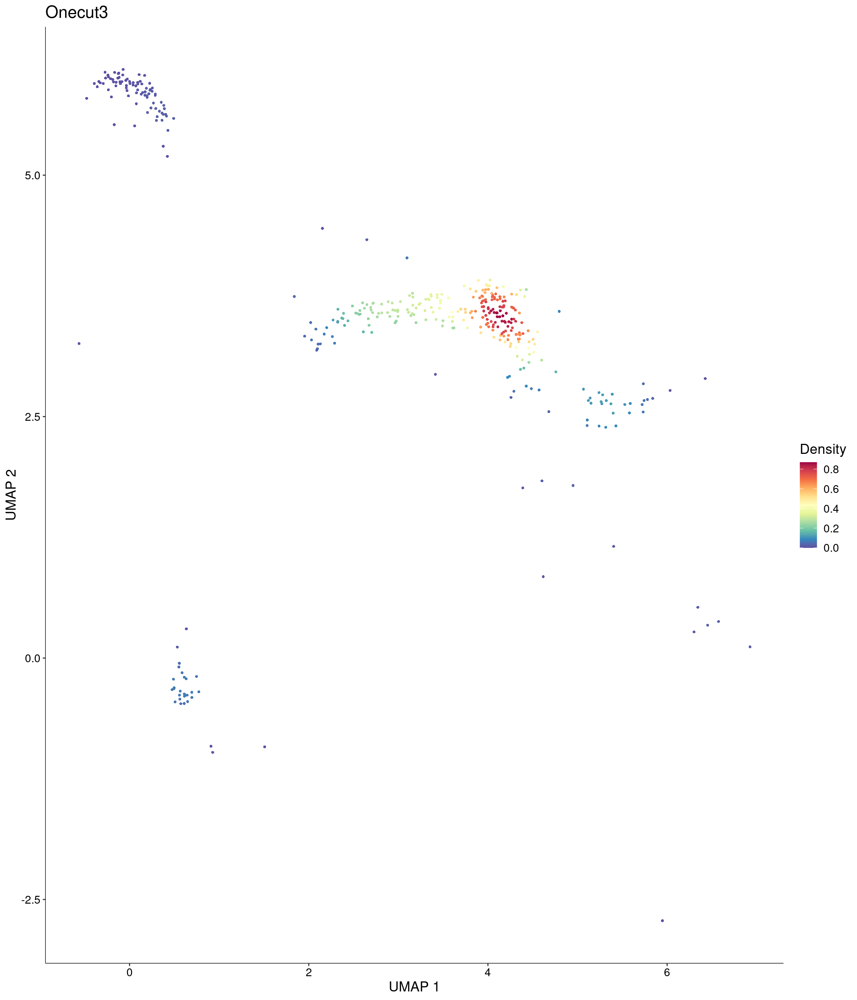
Plot_Density_Custom(
seurat_object = onecut3,
features = c("Th"),
custom_palette = onecut3@misc$div_Colour_Pal
)
Plot_Density_Custom(
seurat_object = onecut3,
features = c("Slc6a3"),
custom_palette = onecut3@misc$div_Colour_Pal
)
Plot_Density_Custom(
seurat_object = onecut3,
features = c("Prlr"),
custom_palette = onecut3@misc$div_Colour_Pal
)
Plot_Density_Custom(
seurat_object = onecut3,
features = c("Cnr1"),
custom_palette = onecut3@misc$div_Colour_Pal
)
Plot_Density_Custom(
seurat_object = onecut3,
features = c("Cnr2"),
custom_palette = onecut3@misc$div_Colour_Pal
)
| Version | Author | Date |
|---|---|---|
| d07340d | Evgenii O. Tretiakov | 2026-02-04 |
Cnr2 expression sanity check
cnr2_expr <- NULL
rna_data <- Seurat::GetAssayData(onecut3, assay = "RNA", layer = "data")
if ("Cnr2" %in% rownames(rna_data)) {
cnr2_expr <- rna_data["Cnr2", ]
} else {
cnr2_expr <- rep(0, ncol(onecut3))
message("Cnr2 not present in RNA assay; treating as zero.")
}
cnr2_df <- tibble::tibble(expr = as.numeric(cnr2_expr))
cnr2_summary <- cnr2_df %>%
summarise(
n = n(),
n_expressed = sum(expr > 0),
pct_expressed = 100 * mean(expr > 0),
max_expr = max(expr)
)
cnr2_summaryggplot(cnr2_df, aes(x = expr)) +
geom_histogram(binwidth = 0.05, fill = "#a840ff", color = "white") +
geom_vline(xintercept = 0, linetype = "dashed", color = "black") +
labs(
title = "Cnr2 expression in Onecut3 cells",
subtitle = sprintf(
"Cells > 0: %s (%.2f%%)",
cnr2_summary$n_expressed,
cnr2_summary$pct_expressed
),
x = "log-normalized expression",
y = "Cells"
) +
theme_minimal(base_size = 12)
Plot_Density_Custom(
seurat_object = onecut3,
features = c("Gpr55"),
custom_palette = onecut3@misc$div_Colour_Pal
)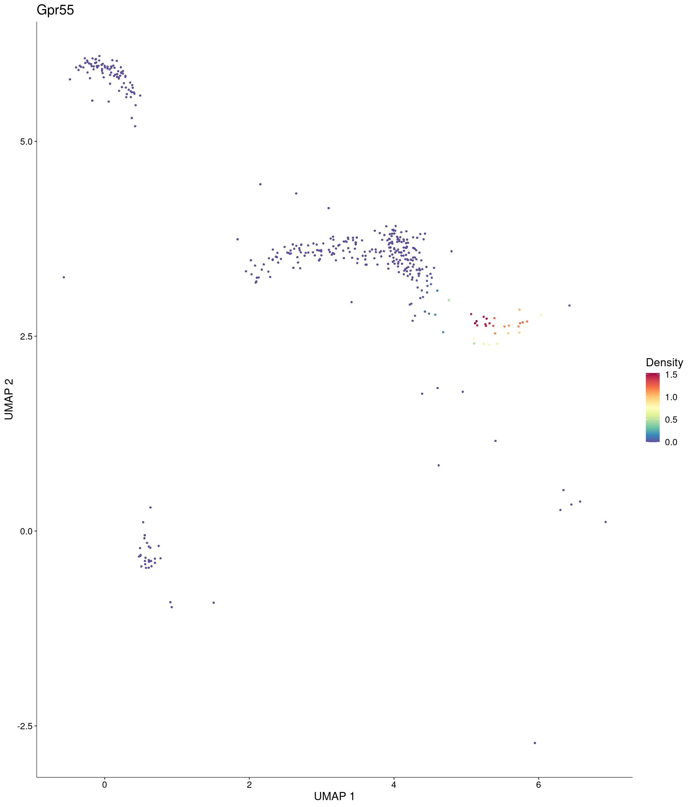
Plot_Density_Custom(
seurat_object = onecut3,
features = c("Mgll"),
custom_palette = onecut3@misc$div_Colour_Pal
)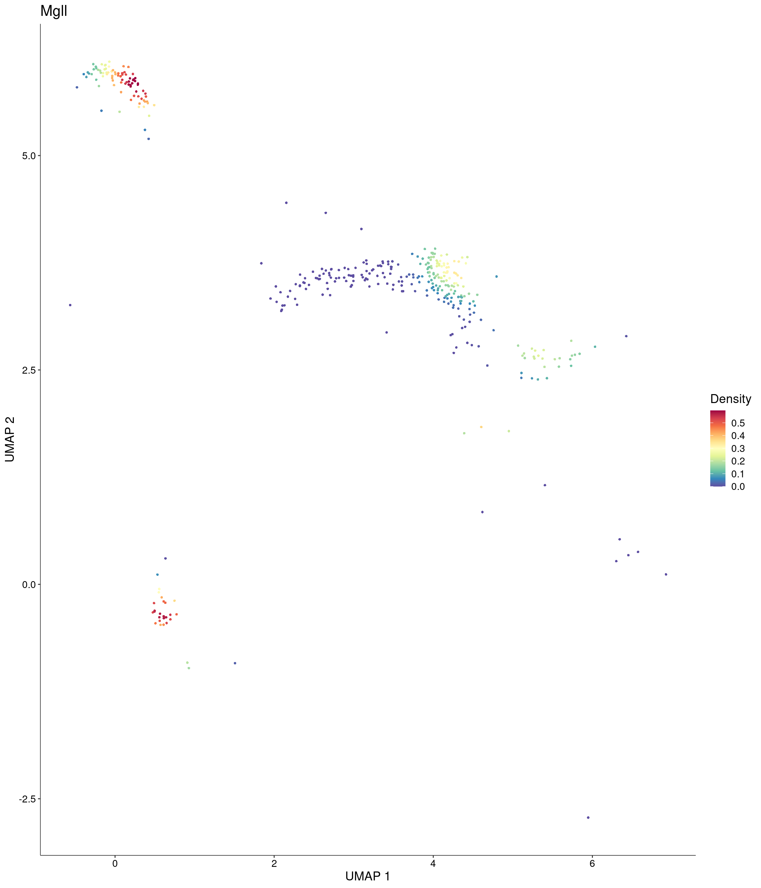
Plot_Density_Custom(
seurat_object = onecut3,
features = c("Dagla"),
custom_palette = onecut3@misc$div_Colour_Pal
)
Plot_Density_Custom(
seurat_object = onecut3,
features = c("Daglb"),
custom_palette = onecut3@misc$div_Colour_Pal
)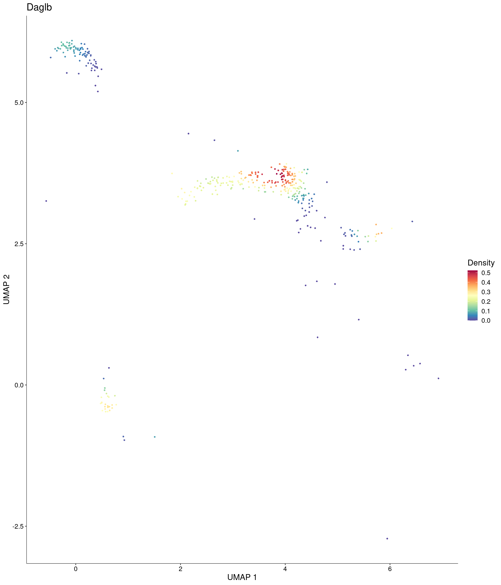
Plot_Density_Custom(
seurat_object = onecut3,
features = c("Faah"),
custom_palette = onecut3@misc$div_Colour_Pal
)
Plot_Density_Custom(
seurat_object = onecut3,
features = c("Napepld"),
custom_palette = onecut3@misc$div_Colour_Pal
)
Plot_Density_Custom(
seurat_object = onecut3,
features = c("Gde1"),
custom_palette = onecut3@misc$div_Colour_Pal
)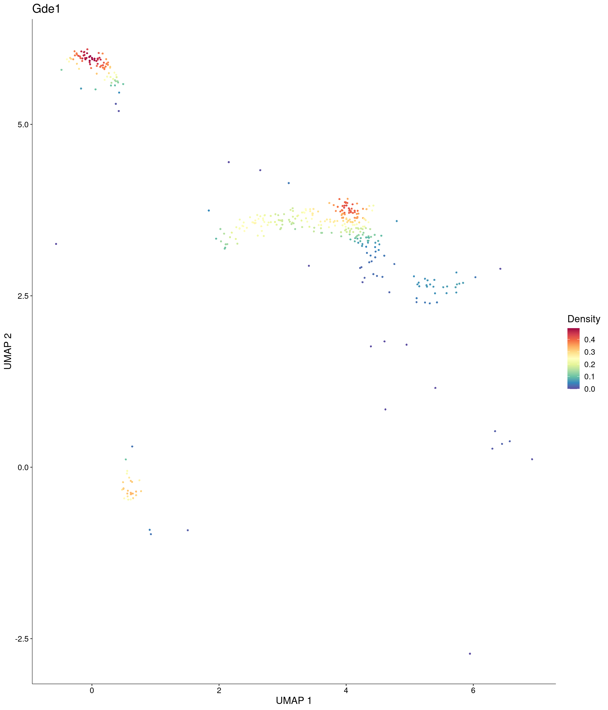
Plot_Density_Custom(
seurat_object = onecut3,
features = c("Pparg"),
custom_palette = onecut3@misc$div_Colour_Pal
)
Plot_Density_Custom(
seurat_object = onecut3,
features = c("Slc32a1"),
custom_palette = onecut3@misc$div_Colour_Pal
)
Plot_Density_Custom(
seurat_object = onecut3,
features = c("Gad1"),
custom_palette = onecut3@misc$div_Colour_Pal
)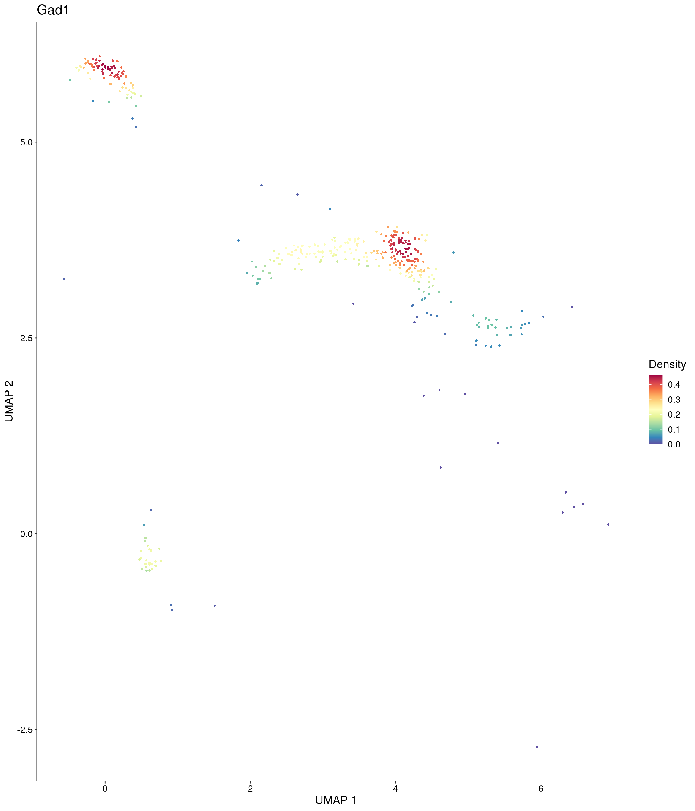
Plot_Density_Custom(
seurat_object = onecut3,
features = c("Gad2"),
custom_palette = onecut3@misc$div_Colour_Pal
)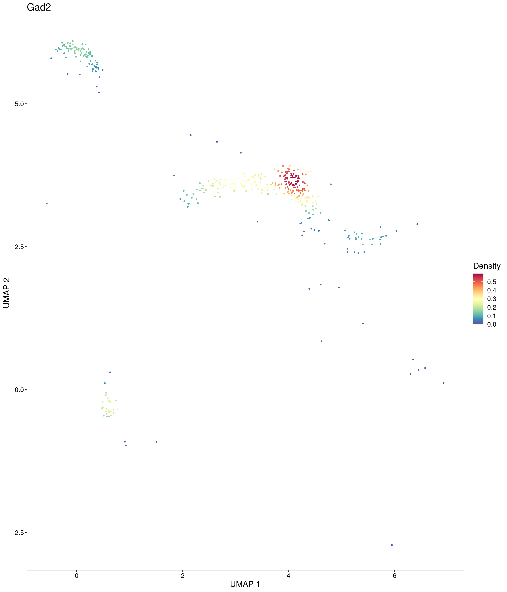
Joint density UMAP’s plots
Plot_Density_Joint_Only(
seurat_object = onecut3,
features = c("Onecut3", "Cnr1"),
custom_palette = onecut3@misc$div_Colour_Pal
)
Plot_Density_Joint_Only(
seurat_object = onecut3,
features = c("Onecut3", "Cnr2"),
custom_palette = onecut3@misc$div_Colour_Pal
)
| Version | Author | Date |
|---|---|---|
| d07340d | Evgenii O. Tretiakov | 2026-02-04 |
Plot_Density_Joint_Only(
seurat_object = onecut3,
features = c("Onecut3", "Th"),
custom_palette = onecut3@misc$div_Colour_Pal
)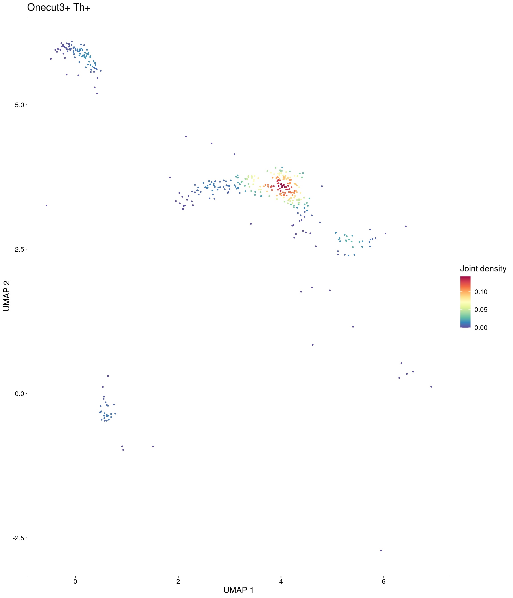
Plot_Density_Joint_Only(
seurat_object = onecut3,
features = c("Cnr1", "Th"),
custom_palette = onecut3@misc$div_Colour_Pal
)
Plot_Density_Joint_Only(
seurat_object = onecut3,
features = c("Cnr2", "Th"),
custom_palette = onecut3@misc$div_Colour_Pal
)
| Version | Author | Date |
|---|---|---|
| d07340d | Evgenii O. Tretiakov | 2026-02-04 |
Plot_Density_Joint_Only(
seurat_object = onecut3,
features = c("Prlr", "Cnr1"),
custom_palette = onecut3@misc$div_Colour_Pal
)
Plot_Density_Joint_Only(
seurat_object = onecut3,
features = c("Prlr", "Cnr2"),
custom_palette = onecut3@misc$div_Colour_Pal
)
| Version | Author | Date |
|---|---|---|
| d07340d | Evgenii O. Tretiakov | 2026-02-04 |
Plot_Density_Joint_Only(
seurat_object = onecut3,
features = c("Prlr", "Th"),
custom_palette = onecut3@misc$div_Colour_Pal
)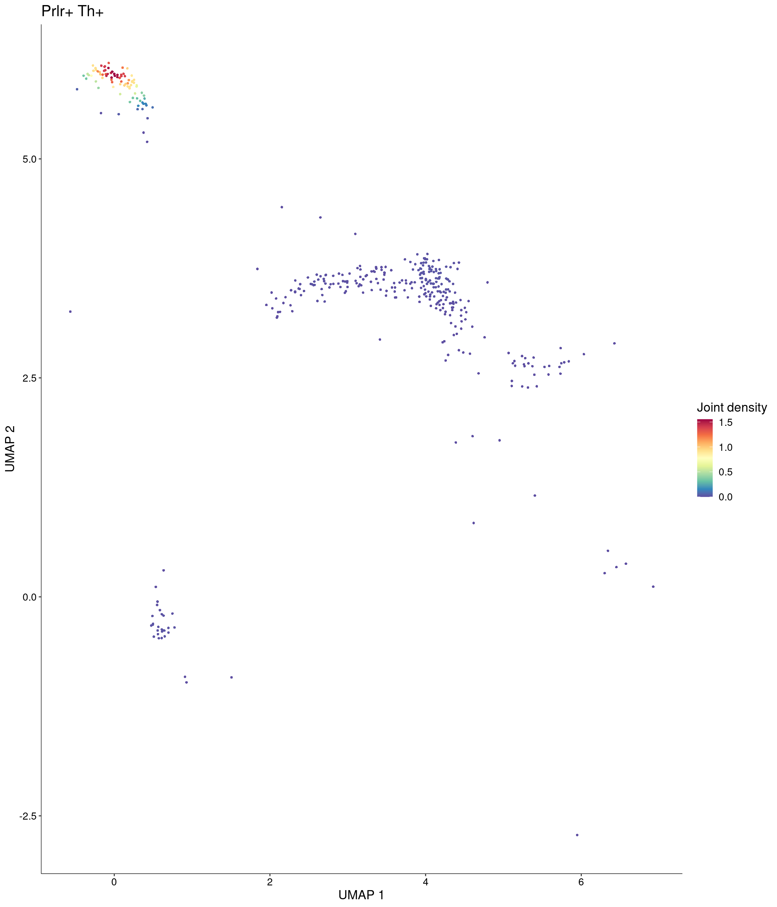
Plot_Density_Joint_Only(
seurat_object = onecut3,
features = c("Prlr", "Onecut3"),
custom_palette = onecut3@misc$div_Colour_Pal
)
Plot_Density_Joint_Only(
seurat_object = onecut3,
features = c("Gpr55", "Prlr"),
custom_palette = onecut3@misc$div_Colour_Pal
)
Plot_Density_Joint_Only(
seurat_object = onecut3,
features = c("Gpr55", "Cnr1"),
custom_palette = onecut3@misc$div_Colour_Pal
)
Plot_Density_Joint_Only(
seurat_object = onecut3,
features = c("Gpr55", "Cnr2"),
custom_palette = onecut3@misc$div_Colour_Pal
)
| Version | Author | Date |
|---|---|---|
| d07340d | Evgenii O. Tretiakov | 2026-02-04 |
Plot_Density_Joint_Only(
seurat_object = onecut3,
features = c("Gpr55", "Th"),
custom_palette = onecut3@misc$div_Colour_Pal
)
Plot_Density_Joint_Only(
seurat_object = onecut3,
features = c("Gpr55", "Onecut3"),
custom_palette = onecut3@misc$div_Colour_Pal
)
Correlation analysis visualisation between different genes
p_corrs <- list(
plot_scatter_stats(
mtx_oc3_df,
x = Onecut3,
y = Cnr1,
xfill = "#ffc400",
yfill = "#e22ee2"
),
plot_scatter_stats(
mtx_oc3_df,
x = Onecut3,
y = Cnr2,
xfill = "#ffc400",
yfill = "#a840ff"
),
plot_scatter_stats(
mtx_oc3_df,
x = Slc32a1,
y = Onecut3,
xfill = "#0000da",
yfill = "#ffc400"
),
plot_scatter_stats(
mtx_oc3_df,
x = Gpr55,
y = Onecut3,
xfill = "#006eff",
yfill = "#ffc400"
),
plot_scatter_stats(
mtx_oc3_df,
x = Slc32a1,
y = Cnr1,
xfill = "#0000da",
yfill = "#e22ee2"
),
plot_scatter_stats(
mtx_oc3_df,
x = Slc32a1,
y = Cnr2,
xfill = "#0000da",
yfill = "#a840ff"
),
plot_scatter_stats(
mtx_oc3_df,
x = Gpr55,
y = Cnr1,
xfill = "#006eff",
yfill = "#e22ee2"
),
plot_scatter_stats(
mtx_oc3_df,
x = Gpr55,
y = Cnr2,
xfill = "#006eff",
yfill = "#a840ff"
),
plot_scatter_stats(
mtx_oc3_df,
x = Slc32a1,
y = Gpr55,
xfill = "#0000da",
yfill = "#006eff"
),
plot_scatter_stats(
mtx_oc3_df,
y = Slc32a1,
x = Onecut3,
yfill = "#0000da",
xfill = "#ffc400"
),
plot_scatter_stats(
mtx_oc3_df,
y = Gpr55,
x = Onecut3,
yfill = "#006eff",
xfill = "#ffc400"
),
plot_scatter_stats(
mtx_oc3_df,
y = Th,
x = Onecut3,
yfill = "#ff0000",
xfill = "#ffc400"
),
plot_scatter_stats(
mtx_oc3_df,
y = Gad1,
x = Onecut3,
yfill = "#a50202",
xfill = "#ffc400"
),
plot_scatter_stats(
mtx_oc3_df,
y = Gad2,
x = Onecut3,
yfill = "#4002a5",
xfill = "#ffc400"
),
plot_scatter_stats(
mtx_oc3_df,
y = Onecut2,
x = Onecut3,
yfill = "#6402a5",
xfill = "#ffc400"
),
plot_scatter_stats(
mtx_oc3_df,
y = Prlr,
x = Onecut3,
yfill = "#2502a5",
xfill = "#ffc400"
),
plot_scatter_stats(
mtx_oc3_df,
y = Ddc,
x = Onecut3,
yfill = "#4002a5",
xfill = "#ffc400"
),
plot_scatter_stats(
mtx_oc3_df,
y = Slc6a3,
x = Onecut3,
yfill = "#2502a5",
xfill = "#ffc400"
)
)
n_corrs <- list(
"oc3-rna-data-Onecut3-Cnr1",
"oc3-rna-data-Onecut3-Cnr2",
"oc3-rna-data-Slc32a1-Onecut3",
"oc3-rna-data-Gpr55-Onecut3",
"oc3-rna-data-Slc32a1-Cnr1",
"oc3-rna-data-Slc32a1-Cnr2",
"oc3-rna-data-Gpr55-Cnr1",
"oc3-rna-data-Gpr55-Cnr2",
"oc3-rna-data-Slc32a1-Gpr55",
"oc3-rna-data-Onecut3-Slc32a1",
"oc3-rna-data-Onecut3-Gpr55",
"oc3-rna-data-Onecut3-Th",
"oc3-rna-data-Onecut3-Gad1",
"oc3-rna-data-Onecut3-Gad2",
"oc3-rna-data-Onecut3-Onecut2",
"oc3-rna-data-Onecut3-Prlr",
"oc3-rna-data-Onecut3-Ddc",
"oc3-rna-data-Onecut3-Slc6a3"
)
walk2(n_corrs, p_corrs, save_my_plot, type = "stat-corr-plt")Visualise intersections sets that we are going to use (highlighted)
upset(
as.data.frame(content_mtx_oc3),
order.by = "freq",
sets.x.label = "Number of cells",
text.scale = c(2, 1.6, 2, 1.3, 2, 3),
nsets = 15,
sets = c("Th", "Onecut3"),
queries = list(
list(
query = intersects,
params = list("Onecut3"),
active = T
),
list(
query = intersects,
params = list("Th"),
active = T
),
list(
query = intersects,
params = list("Th", "Onecut3"),
active = T
)
),
nintersects = 60,
empty.intersections = "on"
)
upset(
as.data.frame(content_mtx_oc3),
order.by = "freq",
sets.x.label = "Number of cells",
text.scale = c(2, 1.6, 2, 1.3, 2, 3),
nsets = 15,
sets = c("Gpr55", "Cnr1", "Cnr2", "Slc32a1", "Th"),
queries = list(
list(
query = intersects,
params = list("Gpr55", "Slc32a1"),
active = T
),
list(
query = intersects,
params = list("Cnr1", "Th"),
active = T
)
),
nintersects = 60,
empty.intersections = "on"
)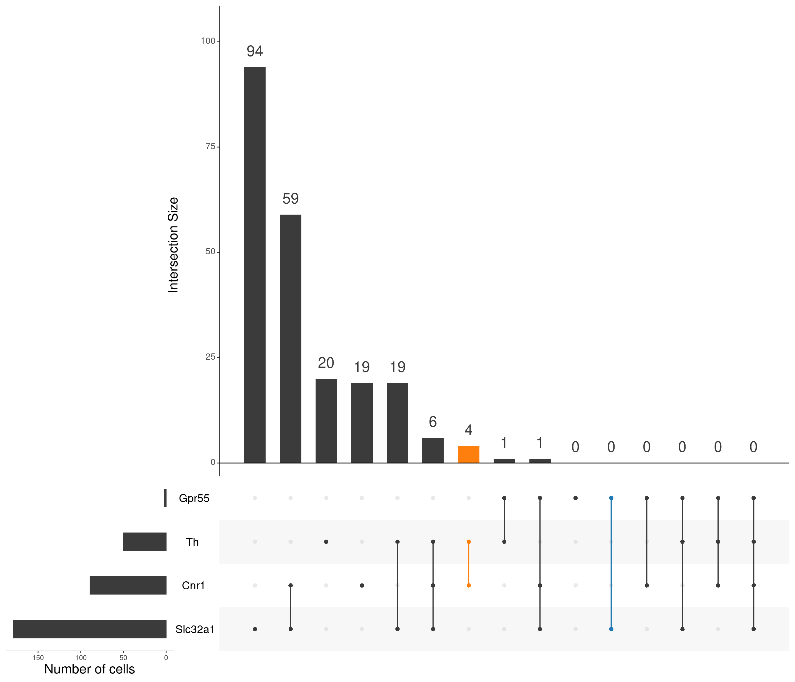
Regroup factor by stages for more balanced groups
onecut3$age %>% forcats::fct_count()onecut3$stage <-
onecut3$age %>%
forcats::fct_collapse(
`Embrionic day 15` = "E15",
`Embrionic day 17` = "E17",
Neonatal = c("P00", "P02"),
Postnatal = c("P10", "P23")
)
onecut3$stage %>% forcats::fct_count()Make subset of stable neurons
onecut3$gaba_status <-
content_mtx_oc3 %>%
select(Gad1, Gad2, Slc32a1) %>%
mutate(gaba = if_all(.fns = ~ .x > 0)) %>%
.$gaba
onecut3$gaba_occurs <-
content_mtx_oc3 %>%
select(Gad1, Gad2, Slc32a1) %>%
mutate(gaba = if_any(.fns = ~ .x > 0)) %>%
.$gaba
onecut3$th_status <-
content_mtx_oc3 %>%
select(Th, Ddc, Slc6a3) %>%
mutate(dopamin = if_any(.fns = ~ .x > 0)) %>%
.$dopamin
oc3_fin <- onecut3Check contingency tables for neurotransmitter signature
oc3_fin@meta.data %>%
janitor::tabyl(th_status, gaba_status)By age
oc3_fin@meta.data %>%
janitor::tabyl(age, th_status)By stage
oc3_fin@meta.data %>%
janitor::tabyl(stage, th_status)Make splits of neurons by neurotransmitter signature
oc3_fin$status <- oc3_fin$th_status %>%
if_else(true = "dopaminergic",
false = "GABAergic"
)
Idents(oc3_fin) <- "status"
tryCatch(
SaveH5Seurat(
object = oc3_fin,
filename = here(data_dir, "oc3_fin"),
overwrite = TRUE,
verbose = TRUE
),
error = function(e) {
message("SaveH5Seurat skipped: ", e$message)
}
)
## Split on basis of neurotrans and test for difference
oc3_fin_neurotrans <- SplitObject(oc3_fin, split.by = "status")
## Split on basis of age and test for difference
oc3_fin_ages <- SplitObject(oc3_fin, split.by = "age")DotPlots grouped by age
Expression of GABA receptors in GABAergic Onecut3 positive cells
DotPlot(
object = oc3_fin_neurotrans$GABAergic,
features = gabar,
group.by = "age",
cols = c("#adffff", "#0084ff"),
col.min = -1, col.max = 1
) + RotatedAxis()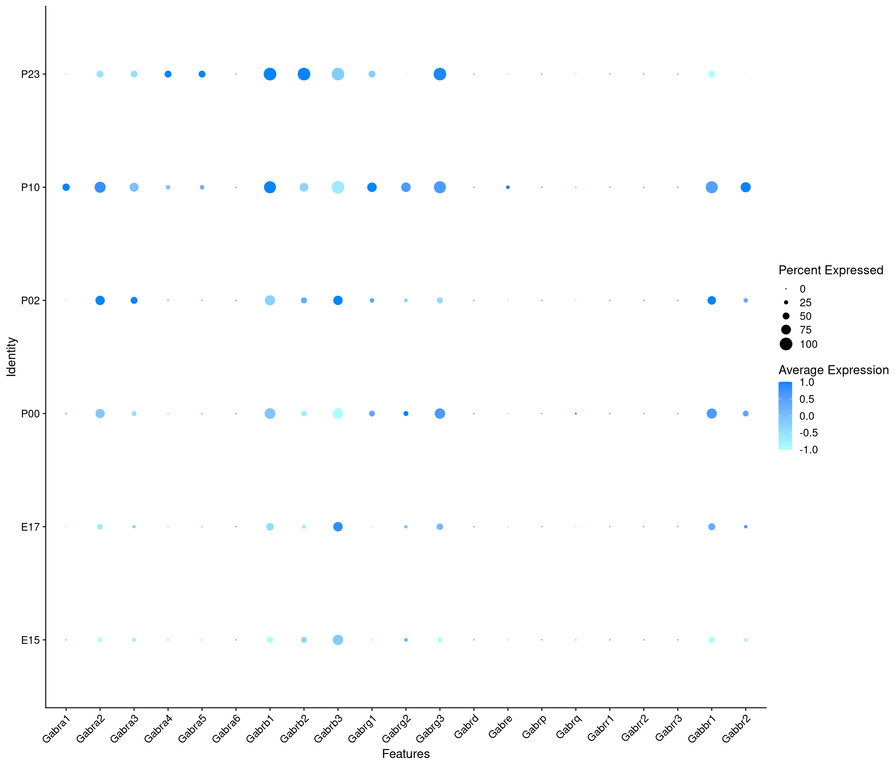
| Version | Author | Date |
|---|---|---|
| aaece06 | Evgenii O. Tretiakov | 2023-05-29 |
Expression of GABA receptors in dopaminergic TIDA or Onecut3 positive cells
DotPlot(
object = oc3_fin_neurotrans$dopaminergic,
features = gabar,
group.by = "age",
split.by = "celltype",
col.min = -1, col.max = 1
) + RotatedAxis()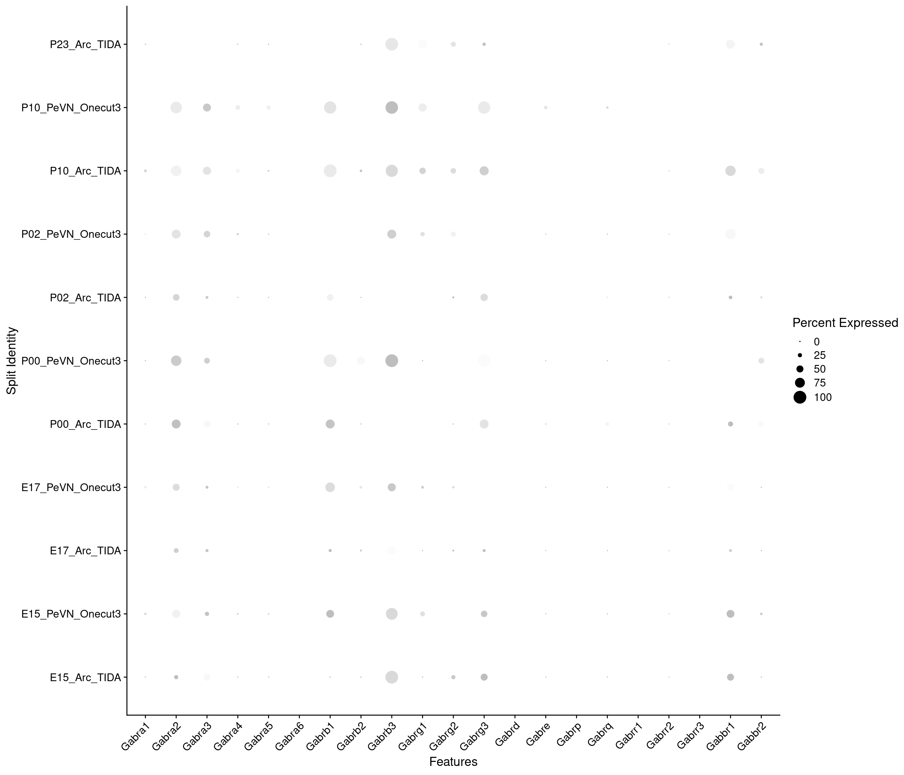
Expression of glutamate receptors in GABAergic Onecut3 positive cells
DotPlot(
object = oc3_fin_neurotrans$GABAergic,
features = glutr,
group.by = "age",
cols = c("#adffff", "#0084ff"),
col.min = -1, col.max = 1
) + RotatedAxis()
| Version | Author | Date |
|---|---|---|
| aaece06 | Evgenii O. Tretiakov | 2023-05-29 |
Expression of glutamate receptors in dopaminergic TIDA or Onecut3 positive cells
DotPlot(
object = oc3_fin_neurotrans$dopaminergic,
features = glutr,
group.by = "age",
split.by = "celltype",
col.min = -1, col.max = 1
) + RotatedAxis()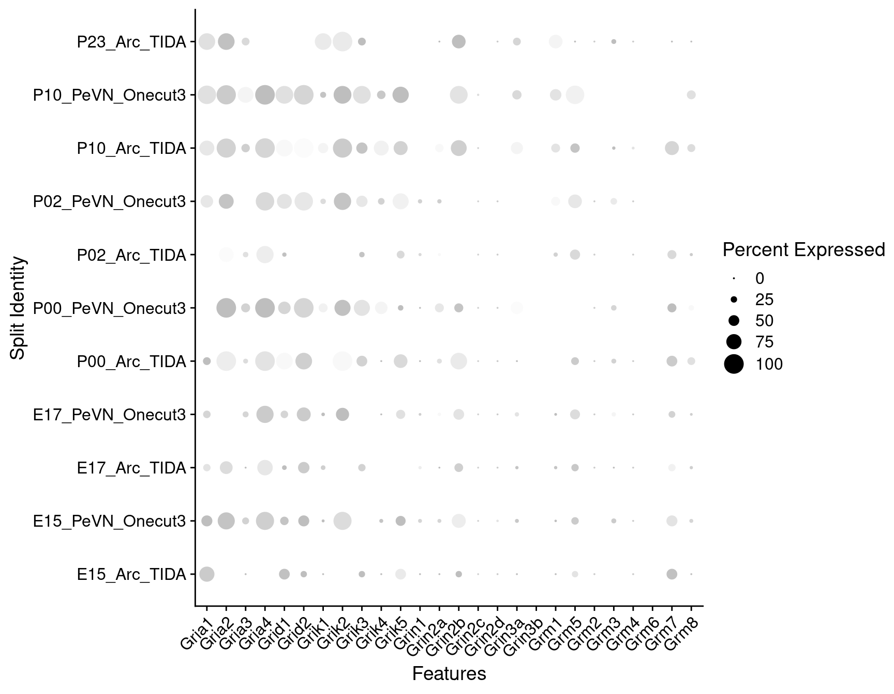
DotPlots grouped by stage
Expression of GABA receptors in GABAergic Onecut3 positive cells
DotPlot(
object = oc3_fin_neurotrans$GABAergic,
features = gabar,
group.by = "stage",
cols = c("#adffff", "#0084ff"),
col.min = -1, col.max = 1
) + RotatedAxis()
| Version | Author | Date |
|---|---|---|
| aaece06 | Evgenii O. Tretiakov | 2023-05-29 |
Expression of GABA receptors in dopaminergic TIDA or Onecut3 positive cells
DotPlot(
object = oc3_fin_neurotrans$dopaminergic,
features = gabar,
group.by = "stage",
split.by = "celltype",
col.min = -1, col.max = 1
) + RotatedAxis()
Expression of glutamate receptors in GABAergic Onecut3 positive cells
DotPlot(
object = oc3_fin_neurotrans$GABAergic,
features = glutr,
group.by = "stage",
cols = c("#adffff", "#0084ff"),
col.min = -1, col.max = 1
) + RotatedAxis()
| Version | Author | Date |
|---|---|---|
| aaece06 | Evgenii O. Tretiakov | 2023-05-29 |
Expression of glutamate receptors in dopaminergic TIDA or Onecut3 positive cells
DotPlot(
object = oc3_fin_neurotrans$dopaminergic,
features = glutr,
group.by = "stage",
split.by = "celltype",
col.min = -1, col.max = 1
) + RotatedAxis()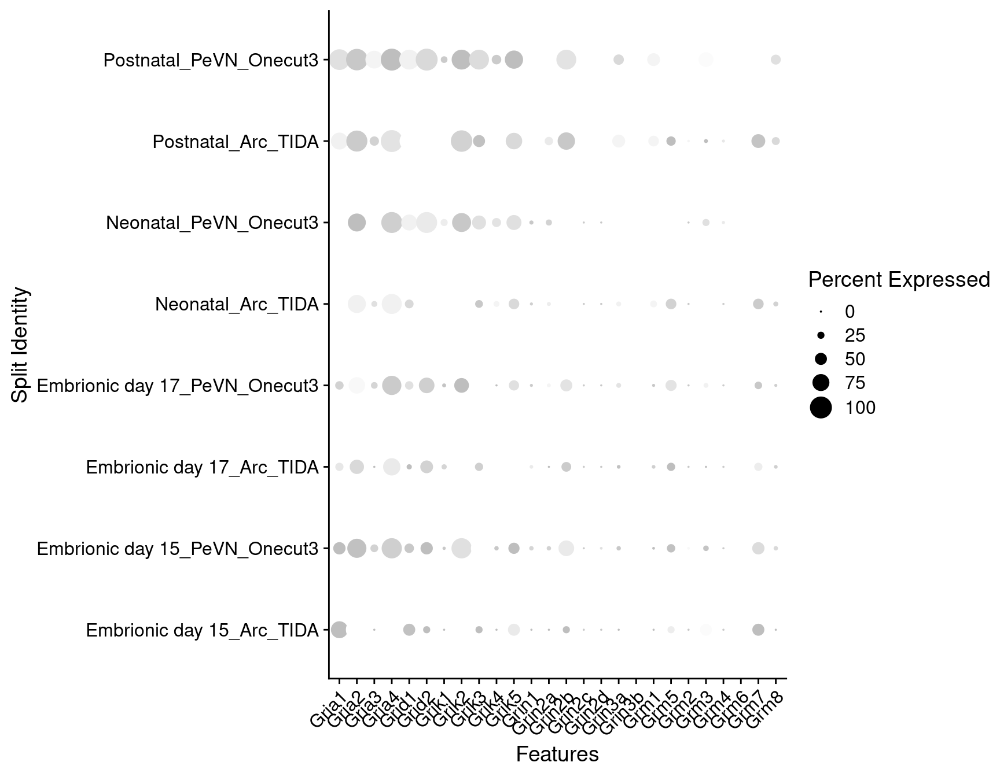
Expression of neuromodulators receptors in GABAergic Onecut3 positive cells
DotPlot(
object = oc3_fin_neurotrans$GABAergic,
features = npr,
group.by = "stage",
cols = c("#adffff", "#0084ff"),
col.min = -1, col.max = 1
) + RotatedAxis()
Expression of neuromodulators receptors in dopaminergic TIDA or Onecut3 positive cells
DotPlot(
object = oc3_fin_neurotrans$dopaminergic,
features = npr,
group.by = "stage",
split.by = "celltype",
col.min = -1, col.max = 1
) + RotatedAxis()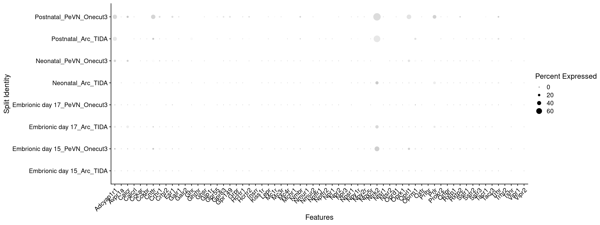
Expression of endocannabinoids relevant genes in GABAergic Onecut3 positive cells
DotPlot(
object = oc3_fin_neurotrans$GABAergic,
features = cnbn,
group.by = "stage",
cols = c("#adffff", "#0084ff"),
col.min = -1, col.max = 1
) + RotatedAxis()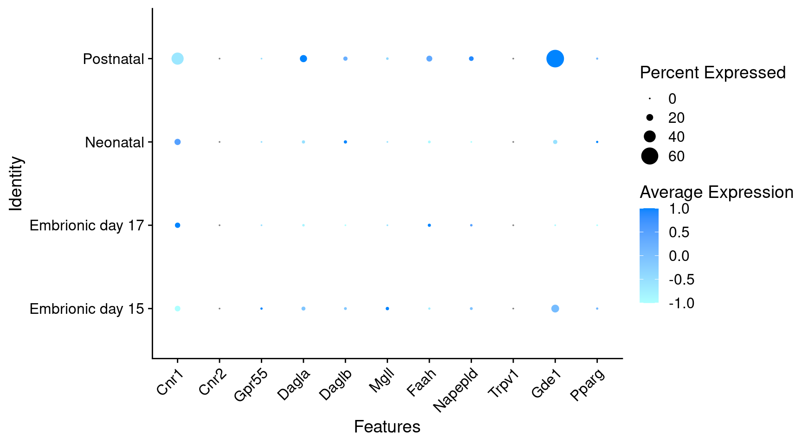
| Version | Author | Date |
|---|---|---|
| aaece06 | Evgenii O. Tretiakov | 2023-05-29 |
Expression of endocannabinoids relevant genes in dopaminergic TIDA or Onecut3 positive cells
DotPlot(
object = oc3_fin_neurotrans$dopaminergic,
features = cnbn,
group.by = "stage",
split.by = "celltype",
col.min = -1, col.max = 1
) + RotatedAxis()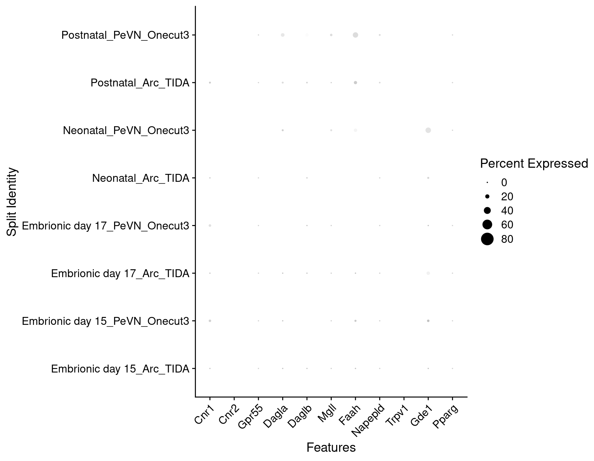
Overrepresentation analysis
Idents(oc3_fin) <- "status"
sbs_mtx_oc <-
oc3_fin %>%
GetAssayData(assay = "RNA", layer = "data") %>%
.[unique(c(neurotrans, cnbn, "Prlr", "Onecut3", "Th")), , drop = FALSE] %>%
as.matrix() %>%
t()
rownames(sbs_mtx_oc) <- colnames(oc3_fin)
min_filt_vector2 <- apply(sbs_mtx_oc, 2, quantile, probs = 0.005)
# Prepare table of intersection sets analysis
content_sbs_mtx_oc <-
(sbs_mtx_oc > min_filt_vector2) %>%
as_tibble() %>%
mutate_all(as.numeric)upset(
as.data.frame(content_sbs_mtx_oc),
order.by = "freq",
sets.x.label = "Number of cells",
text.scale = c(2, 1.6, 2, 1.3, 2, 3),
nsets = 15,
sets = c(
"Th", "Onecut3",
cnbn, "Prlr"
) %>%
.[. %in% colnames(content_sbs_mtx_oc)],
nintersects = 20,
empty.intersections = NULL
)
upset(
as.data.frame(content_sbs_mtx_oc),
order.by = "freq",
sets.x.label = "Number of cells",
text.scale = c(2, 1.6, 2, 1.3, 2, 3),
nsets = 15,
sets = c("Cnr1", "Cnr2", "Prlr", "Th", "Onecut3") %>%
.[. %in% colnames(content_sbs_mtx_oc)],
nintersects = 10,
empty.intersections = NULL
)
sbs_mtx_oc_full <- content_sbs_mtx_oc |>
select(any_of(c(
neurotrans, cnbn, "Prlr", "Cnr1", "Gpr55", "Onecut3"
))) |>
dplyr::bind_cols(oc3_fin@meta.data)
sbs_mtx_oc_full |> glimpse()Rows: 401
Columns: 48
$ Slc17a6 <dbl> 0, 0, 0, 0, 0, 0, 0, 0, 0, 0, 0, 0, 0, 0, 0, 0, 0, 0,…
$ Slc17a7 <dbl> 0, 0, 0, 0, 0, 0, 0, 0, 0, 0, 0, 0, 0, 0, 0, 0, 0, 0,…
$ Slc17a8 <dbl> 0, 0, 0, 0, 0, 0, 0, 0, 0, 0, 0, 0, 0, 0, 0, 0, 0, 0,…
$ Slc1a1 <dbl> 0, 0, 0, 0, 0, 0, 0, 0, 0, 0, 0, 0, 1, 0, 0, 0, 0, 0,…
$ Slc1a2 <dbl> 0, 0, 0, 1, 1, 0, 0, 1, 0, 0, 1, 1, 0, 0, 1, 1, 1, 0,…
$ Slc1a6 <dbl> 0, 0, 0, 0, 0, 0, 0, 0, 0, 0, 0, 0, 0, 0, 0, 0, 0, 0,…
$ Gad1 <dbl> 1, 1, 0, 0, 1, 1, 1, 1, 1, 1, 1, 1, 1, 1, 1, 0, 1, 1,…
$ Slc32a1 <dbl> 1, 0, 0, 0, 0, 0, 1, 1, 1, 1, 1, 1, 1, 1, 1, 1, 1, 0,…
$ Slc6a1 <dbl> 0, 0, 0, 0, 0, 1, 1, 1, 0, 0, 0, 1, 0, 1, 1, 0, 1, 0,…
$ Cnr1 <dbl> 0, 0, 0, 0, 0, 0, 0, 0, 0, 0, 1, 0, 0, 0, 0, 0, 0, 0,…
$ Cnr2 <dbl> 0, 0, 0, 0, 0, 0, 0, 0, 0, 0, 0, 0, 0, 0, 0, 0, 0, 0,…
$ Gpr55 <dbl> 0, 0, 0, 0, 0, 0, 0, 0, 0, 0, 0, 0, 0, 0, 0, 0, 0, 0,…
$ Dagla <dbl> 0, 0, 0, 0, 0, 0, 0, 0, 0, 0, 0, 1, 0, 0, 0, 0, 0, 0,…
$ Daglb <dbl> 1, 0, 0, 0, 0, 0, 0, 0, 0, 0, 0, 0, 0, 0, 0, 0, 0, 0,…
$ Mgll <dbl> 0, 0, 0, 0, 0, 0, 0, 0, 0, 0, 0, 0, 0, 0, 0, 0, 0, 0,…
$ Faah <dbl> 0, 1, 0, 0, 0, 0, 0, 1, 0, 1, 0, 0, 1, 0, 1, 0, 0, 1,…
$ Napepld <dbl> 0, 0, 0, 0, 0, 0, 0, 0, 0, 0, 0, 0, 0, 0, 0, 0, 0, 0,…
$ Trpv1 <dbl> 0, 0, 0, 0, 0, 0, 0, 0, 0, 0, 0, 0, 0, 0, 0, 0, 0, 0,…
$ Gde1 <dbl> 0, 0, 0, 0, 0, 0, 1, 1, 1, 0, 0, 0, 0, 1, 1, 0, 1, 1,…
$ Pparg <dbl> 0, 0, 0, 0, 0, 0, 0, 0, 0, 0, 0, 0, 0, 0, 0, 0, 0, 0,…
$ Prlr <dbl> 1, 1, 1, 1, 1, 1, 1, 1, 1, 1, 1, 1, 1, 1, 1, 1, 1, 1,…
$ Onecut3 <dbl> 0, 0, 0, 0, 0, 0, 0, 0, 0, 0, 0, 0, 0, 0, 0, 0, 0, 0,…
$ nGene <int> 3034, 2551, 2029, 1415, 1513, 1079, 3160, 3072, 2778,…
$ nUMI <dbl> 6868, 5316, 3696, 2667, 2490, 1789, 8247, 8544, 6478,…
$ orig.ident <chr> "FC2P23", "FC2P23", "FC2P23", "FC2P23", "FC2P23", "FC…
$ res.0.2 <chr> "5", "5", "5", "5", "5", "5", "5", "5", "5", "5", "5"…
$ res.0.4 <chr> "26", "26", "26", "26", "26", "26", "26", "26", "26",…
$ res.0.8 <chr> "31", "31", "31", "31", "31", "31", "31", "31", "31",…
$ res.1.2 <chr> "36", "36", "36", "36", "36", "36", "36", "36", "36",…
$ res.2 <chr> "37", "37", "37", "37", "37", "37", "37", "37", "37",…
$ tree.ident <int> 22, 22, 22, 22, 22, 22, 22, 22, 22, 22, 22, 22, 22, 2…
$ pro_Inter <chr> "17", "17", "17", "17", "17", "17", "17", "17", "17",…
$ pro_Enter <chr> "17", "17", "17", "17", "17", "17", "17", "17", "17",…
$ tree_final <fct> 12, 12, 12, 12, 12, 12, 12, 12, 12, 12, 12, 12, 12, 1…
$ subtree <fct> 19, 19, 19, 19, 19, 19, 19, 19, 19, 19, 19, 19, 19, 1…
$ prim_walktrap <fct> 28, 28, 28, 28, 28, 28, 28, 28, 28, 28, 28, 28, 28, 2…
$ umi_per_gene <dbl> 2.263678, 2.083889, 1.821587, 1.884806, 1.645737, 1.6…
$ log_umi_per_gene <dbl> 0.3548147, 0.3188745, 0.2604499, 0.2752666, 0.2163604…
$ nCount_RNA <dbl> 6868, 5316, 3696, 2667, 2490, 1789, 8247, 8544, 6478,…
$ nFeature_RNA <int> 3034, 2551, 2029, 1415, 1513, 1079, 3160, 3072, 2778,…
$ wtree <fct> 32, 32, 32, 32, 32, 32, 32, 32, 32, 32, 32, 32, 32, 3…
$ age <chr> "P23", "P23", "P23", "P23", "P23", "P23", "P10", "P10…
$ celltype <fct> Arc_TIDA, Arc_TIDA, Arc_TIDA, Arc_TIDA, Arc_TIDA, Arc…
$ stage <fct> Postnatal, Postnatal, Postnatal, Postnatal, Postnatal…
$ gaba_status <lgl> FALSE, FALSE, FALSE, FALSE, FALSE, FALSE, TRUE, FALSE…
$ gaba_occurs <lgl> TRUE, TRUE, FALSE, FALSE, TRUE, TRUE, TRUE, TRUE, TRU…
$ th_status <lgl> TRUE, TRUE, TRUE, TRUE, TRUE, TRUE, TRUE, TRUE, TRUE,…
$ status <chr> "dopaminergic", "dopaminergic", "dopaminergic", "dopa…sbs_mtx_oc_full$CB1R <-
sbs_mtx_oc_full %>%
select(Cnr1, Gpr55) %>%
mutate(CB1R = Cnr1 > 0) %>%
.$CB1R
sbs_mtx_oc_full$PRLR <-
sbs_mtx_oc_full %>%
select(Prlr) %>%
mutate(PRLR = Prlr > 0) %>%
.$PRLR
sbs_mtx_oc_full$oc3 <-
(sbs_mtx_oc_full$Onecut3 > 0)
# for reproducibility
set.seed(123)
# plot
plot_grouped_pie(
data = sbs_mtx_oc_full,
x = CB1R,
y = oc3,
grouping.var = status,
palette = "category10_d3",
title.text = "Cnr1 specification of onecut-driven hypothalamic neuronal lineages by Onecut3 and main neurotransmitter expression",
caption.text = "Asterisks denote results from proportion tests; \n***: p < 0.001, ns: non-significant"
)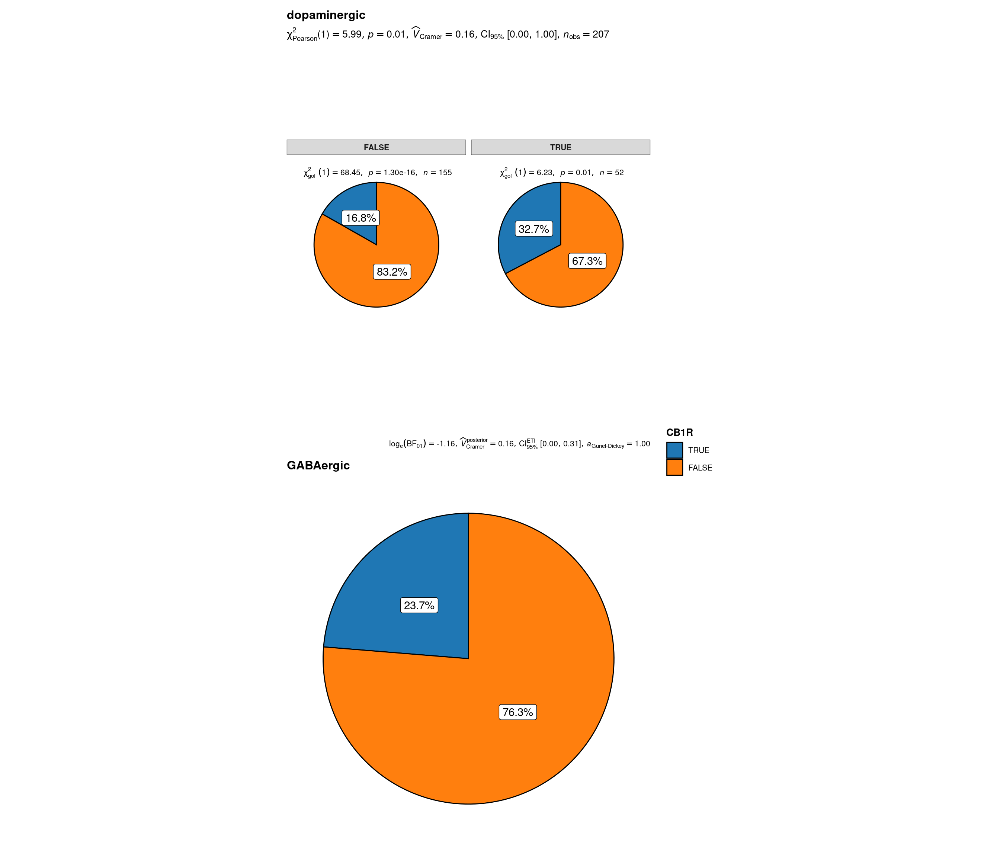
plot_grouped_pie(
data = sbs_mtx_oc_full,
x = PRLR,
y = CB1R,
grouping.var = status,
palette = "category10_d3",
title.text = "Prlr specification of onecut-driven PeVN or TIDA hypothalamic neuronal lineages by Cnr1 and main neurotransmitter expression",
caption.text = "Asterisks denote results from proportion tests; \n***: p < 0.001, ns: non-significant"
)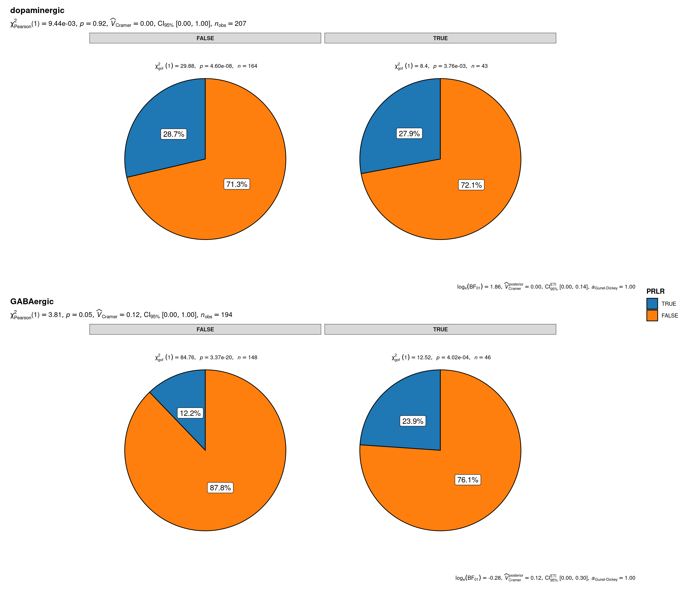
| Version | Author | Date |
|---|---|---|
| 62b0185 | Evgenii O. Tretiakov | 2023-05-29 |
plot_grouped_pie(
data = sbs_mtx_oc_full,
x = PRLR,
y = CB1R,
grouping.var = celltype,
palette = "category10_d3",
title.text = "Prlr specification of onecut-driven PeVN or TIDA hypothalamic neuronal lineages by Cnr1",
caption.text = "Asterisks denote results from proportion tests; \n***: p < 0.001, ns: non-significant"
)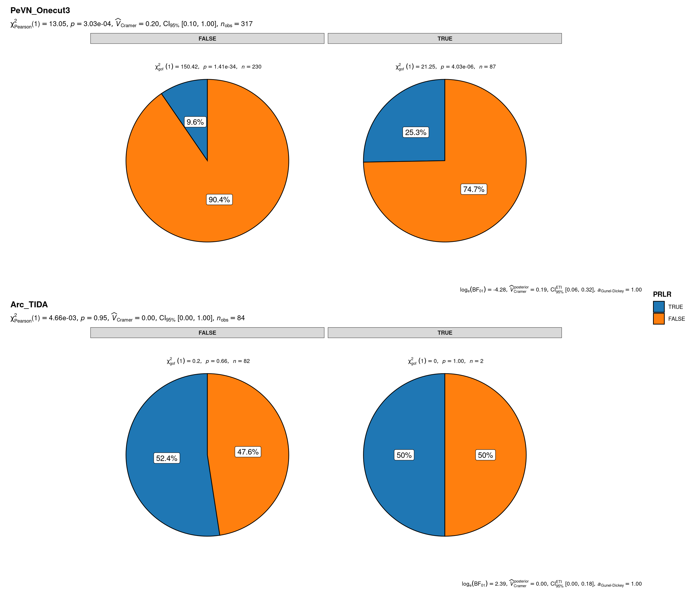
| Version | Author | Date |
|---|---|---|
| 62b0185 | Evgenii O. Tretiakov | 2023-05-29 |
sessionInfo()R version 4.5.1 (2025-06-13)
Platform: aarch64-apple-darwin24.6.0
Running under: macOS Tahoe 26.3
Matrix products: default
BLAS: /nix/store/6mzxjk9lajhz47524h5p165prxjdmivx-blas-3/lib/libblas.dylib
LAPACK: /nix/store/6r1gd6cr5bcp8rj0rs750gdygpci74l1-openblas-0.3.30/lib/libopenblasp-r0.3.30.dylib; LAPACK version 3.12.0
locale:
[1] en_US.UTF-8/en_US.UTF-8/en_US.UTF-8/C/en_US.UTF-8/en_US.UTF-8
time zone: Europe/Vienna
tzcode source: internal
attached base packages:
[1] stats graphics grDevices utils datasets methods base
other attached packages:
[1] RColorBrewer_1.1-3 patchwork_1.3.2 UpSetR_1.4.0
[4] SeuratDisk_0.0.0.9021 Seurat_5.4.0 SeuratObject_5.3.0
[7] sp_2.2-0 future_1.69.0 zeallot_0.2.0
[10] magrittr_2.0.4 lubridate_1.9.4 forcats_1.0.0
[13] stringr_1.6.0 dplyr_1.2.0 purrr_1.2.1
[16] readr_2.1.5 tidyr_1.3.2 tibble_3.3.1
[19] ggplot2_4.0.2 tidyverse_2.0.0 here_1.0.2
[22] workflowr_1.7.2
loaded via a namespace (and not attached):
[1] rstudioapi_0.17.1 jsonlite_2.0.0 spatstat.utils_3.2-1
[4] farver_2.1.2 rmarkdown_2.30 ragg_1.4.0
[7] fs_1.6.6 vctrs_0.7.1 ROCR_1.0-12
[10] spatstat.explore_3.7-0 janitor_2.2.1 htmltools_0.5.9
[13] sass_0.4.10 sctransform_0.4.2 parallelly_1.46.1
[16] KernSmooth_2.23-26 bslib_0.10.0 htmlwidgets_1.6.4
[19] ica_1.0-3 plyr_1.8.9 plotly_4.12.0
[22] zoo_1.8-15 cachem_1.1.0 whisker_0.4.1
[25] igraph_2.1.4 mime_0.13 lifecycle_1.0.5
[28] pkgconfig_2.0.3 Matrix_1.7-3 R6_2.6.1
[31] fastmap_1.2.0 snakecase_0.11.1 fitdistrplus_1.2-6
[34] shiny_1.12.1 digest_0.6.39 ps_1.9.1
[37] rprojroot_2.1.1 tensor_1.5.1 RSpectra_0.16-2
[40] irlba_2.3.5.1 textshaping_1.0.1 labeling_0.4.3
[43] progressr_0.18.0 spatstat.sparse_3.1-0 timechange_0.3.0
[46] mgcv_1.9-3 httr_1.4.7 polyclip_1.10-7
[49] abind_1.4-8 compiler_4.5.1 bit64_4.6.0-1
[52] withr_3.0.2 S7_0.2.1 fastDummies_1.7.5
[55] MASS_7.3-65 ggsci_4.2.0 tools_4.5.1
[58] lmtest_0.9-40 otel_0.2.0 httpuv_1.6.16
[61] future.apply_1.20.1 goftest_1.2-3 glue_1.8.0
[64] callr_3.7.6 nlme_3.1-168 promises_1.5.0
[67] grid_4.5.1 Rtsne_0.17 getPass_0.2-4
[70] cluster_2.1.8.1 reshape2_1.4.5 generics_0.1.4
[73] hdf5r_1.3.12 gtable_0.3.6 spatstat.data_3.1-9
[76] tzdb_0.5.0 data.table_1.17.8 hms_1.1.3
[79] spatstat.geom_3.7-0 RcppAnnoy_0.0.23 ggrepel_0.9.6
[82] RANN_2.6.2 pillar_1.11.1 vroom_1.6.5
[85] spam_2.11-1 RcppHNSW_0.6.0 later_1.4.5
[88] splines_4.5.1 lattice_0.22-7 bit_4.6.0
[91] survival_3.8-3 deldir_2.0-4 tidyselect_1.2.1
[94] miniUI_0.1.2 pbapply_1.7-4 knitr_1.51
[97] git2r_0.36.2 gridExtra_2.3 scattermore_1.2
[100] xfun_0.56 matrixStats_1.5.0 stringi_1.8.7
[103] lazyeval_0.2.2 yaml_2.3.12 evaluate_1.0.5
[106] codetools_0.2-20 cli_3.6.5 uwot_0.2.4
[109] systemfonts_1.2.3 xtable_1.8-4 reticulate_1.44.1
[112] processx_3.8.6 jquerylib_0.1.4 Rcpp_1.1.1
[115] globals_0.19.0 spatstat.random_3.4-4 png_0.1-8
[118] spatstat.univar_3.1-6 parallel_4.5.1 dotCall64_1.2
[121] listenv_0.10.0 viridisLite_0.4.2 scales_1.4.0
[124] ggridges_0.5.7 crayon_1.5.3 rlang_1.1.7
[127] cowplot_1.2.0